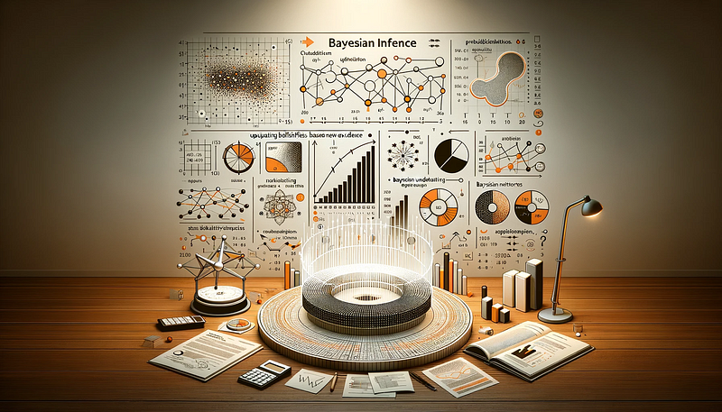

Navigating the Bayesian Landscape: From Concepts to Application

In the diverse universe of statistical analysis, Bayesian statistics stands as a beacon of a distinct approach to understanding and interpreting the world through data. Unlike the classical, or frequentist, approach to statistics that many are familiar with, Bayesian statistics offers a different perspective, one rooted in the principles of probability as degrees of belief.
At its core, Bayesian statistics is not just about numbers or outcomes; it’s about updating our beliefs in the light of new evidence. This approach fundamentally changes how we interpret data, make predictions, and arrive at decisions. It’s a journey from uncertainty to understanding, guided by the principles of probability and the power of prior knowledge.
The distinction between Bayesian and classical statistical methods lies in their approach to probability. While the frequentist perspective interprets probability as a long-run frequency of events, Bayesian statistics views it as a measure of the plausibility of an event, given our current knowledge. This shift in thinking opens up a world of dynamic data analysis, where information is continuously updated and beliefs are adjusted as new data is encountered.
In this article, we will explore the fascinating landscape of Bayesian statistics. We’ll start by understanding its philosophical underpinnings, move through its methods and practical applications, and finally, look at the emerging trends and tools that are shaping its future. Whether you’re a seasoned statistician or new to the field, the Bayesian approach offers a compelling perspective on data analysis that can enrich your understanding of how we interpret the world through numbers.
As we embark on this exploration, keep in mind that Bayesian statistics is more than just a set of techniques; it’s a way of thinking about probability, uncertainty, and decision-making. It challenges us to consider not just what the data tells us, but also what our prior beliefs are and how we should update them in light of new information.
The Bayesian Philosophy
At the heart of Bayesian statistics lies a philosophy that fundamentally differs from the traditional frequentist approach. This philosophy revolves around the concept of probability as a measure of belief or certainty, rather than just a frequency of occurrence.
Probability as Degree of Belief
In Bayesian analysis, probability is subjective and represents a degree of belief or confidence in a certain event or hypothesis. This perspective allows for a more flexible approach to statistical analysis, where beliefs can be updated as new data becomes available. It’s akin to a seasoned sailor adjusting the course based on new wind patterns, continually recalibrating the direction based on the latest information.
Prior, Likelihood, and Posterior
The Bayesian framework is built upon three foundational concepts: the prior, the likelihood, and the posterior.
- Prior Probability (Prior): This represents the initial belief or knowledge about an event before considering the current data. It’s the starting point of the Bayesian analysis, akin to a hypothesis or educated guess based on previous experience or expert knowledge.
- Likelihood: This is the probability of observing the current data given a particular hypothesis or model. In our analogy, this would be akin to observing the current wind patterns and assessing how likely they are under certain navigational assumptions.
- Posterior Probability (Posterior): The posterior probability is the updated belief after considering the new evidence. It’s derived from combining the prior and the likelihood, following Bayes’ Theorem. This updated probability offers a new insight, adjusted in light of new data, akin to the recalibrated course of the ship.
Bayes’ Theorem: The Cornerstone
Bayes’ Theorem is the cornerstone of Bayesian analysis. It provides a mathematical formula to update our probabilities based on new evidence. The theorem states:

This formula allows statisticians to revise their beliefs in a structured and quantifiable way, blending the rigor of mathematics with the flexibility of incorporating prior knowledge.
Embracing Uncertainty
A key strength of the Bayesian approach is its ability to handle uncertainty in a principled manner. By incorporating prior beliefs and continuously updating them, Bayesian analysis provides a dynamic framework for decision-making under uncertainty. It’s a methodology that acknowledges and harnesses the power of evolving information.
Bayesian Inference: Theory and Methods
Bayesian inference represents a paradigm shift in statistical analysis, distinguished by its unique approach to probability and decision-making. This methodology, deeply rooted in the principles of probability, adapts and evolves with each new piece of evidence, embodying the dynamic process of learning from data.
At the heart of Bayesian inference is Bayes’ Theorem. This foundational formula is far more than a static equation; it’s a process that encapsulates the essence of learning and adapting beliefs in light of new data. Bayes’ Theorem elegantly bridges our prior beliefs with the likelihood of observing the current data, leading to the updated posterior beliefs. This process is the core of the Bayesian approach, where prior knowledge is continuously refined and updated as new information is assimilated.
The selection of prior beliefs is a critical and nuanced aspect of Bayesian analysis. These priors can range from highly informative, based on robust existing evidence, to vague or non-informative, allowing the data to play a more dominant role in shaping the analysis. The art of choosing an appropriate prior is where domain expertise intersects with statistical judgment, setting the initial course for the analytical journey.
The likelihood function brings the observed data into the Bayesian framework. It evaluates the probability of the data under various hypothetical scenarios, as posited by the prior. This function is a key mechanism through which data influences and alters our posterior beliefs.
Bayesian inference finds its strength and versatility in its wide range of applications, from clinical research, where it updates the understanding of treatment effectiveness, to machine learning, where it refines algorithms with new data. In each application, Bayesian methods offer a framework for integrating both existing knowledge and emerging information.
A unique feature of Bayesian analysis is its coherent approach to handling uncertainty. Unlike traditional methods that treat unknown parameters as fixed but unknown quantities, Bayesian analysis considers these parameters as random variables with their own distributions. This approach provides a natural and intuitive framework for expressing and managing the uncertainties inherent in statistical analysis.
The computational aspect of Bayesian inference has undergone a significant revolution. Complex models, once beyond computational reach, are now accessible thanks to advanced algorithms like Markov Chain Monte Carlo (MCMC) and Variational Inference. These techniques approximate the posterior distribution through iterative processes, enabling analysts to tackle intricate models and high-dimensional problems.
Viewed as a journey of learning and adaptation, Bayesian inference starts with a hypothesis or prior belief, which is then tested against real-world data, leading to an updated understanding or posterior belief. This process, iterative and cumulative, mirrors the ongoing nature of learning and adapting in the face of new information.
Bayesian vs. Frequentist: A Comparative Analysis
In the world of statistical analysis, Bayesian and frequentist methodologies represent two distinct approaches, each with its unique perspective and methods. Understanding the differences between these approaches is crucial for statisticians and researchers, as it influences how data is interpreted and decisions are made.
Philosophical and Methodological Differences
At the core of the distinction is the interpretation of probability. Frequentist statistics, the more traditional approach, interprets probability as the long-term frequency of events. This perspective views probabilities as fixed but unknown properties of the real world. The frequentist approach often revolves around hypothesis testing, where the focus is on the likelihood of observing the data under a specific hypothesis, typically involving the calculation of p-values and confidence intervals.
In contrast, Bayesian statistics treats probability as a measure of belief or certainty. This approach incorporates prior knowledge or beliefs, which are updated in light of new evidence. Bayesian methods produce a posterior probability, reflecting the updated belief after considering the new data. This methodology is inherently subjective, as it depends on the prior, but it offers a flexible framework that can adapt to new information.
Incorporation of Prior Information
One of the most significant advantages of Bayesian analysis is its ability to incorporate prior knowledge into the statistical model. This feature is particularly useful in fields where prior information is abundant or in situations where data is limited. Frequentist methods, while robust, do not inherently use prior information, relying instead on the data at hand.
Approach to Parameter Estimation
Bayesian and frequentist approaches also differ in their treatment of parameters. In frequentist statistics, parameters are considered fixed but unknown quantities that need to be estimated from the data. Bayesian methods, however, treat parameters as random variables with their distributions, allowing for a more nuanced expression of uncertainty.
Computational Considerations
Historically, Bayesian methods were seen as computationally intensive, but the advent of powerful algorithms and increased computational power has made Bayesian techniques more accessible and practical. Frequentist methods, generally less computationally demanding, are widely used for their simplicity and objectivity, especially in standard statistical testing.
Context-Driven Choices
The choice between Bayesian and frequentist methods often depends on the specific context of the problem, the nature of the data, and the objectives of the analysis. In practice, many statisticians find value in both approaches, choosing the one that best suits their specific needs. Some situations may benefit from the flexibility and prior incorporation of Bayesian methods, while others may favor the objectivity and simplicity of frequentist techniques.
Practical Applications of Bayesian Statistics
Bayesian statistics, with its unique approach to probability and decision-making, has found its way into a wide array of practical applications. Its capacity to incorporate prior knowledge and adapt to new information makes it particularly suitable for complex and evolving scenarios.
Medical Research and Clinical Trials
In the realm of medical research, Bayesian methods have revolutionized clinical trials. The ability to update beliefs with incoming data makes Bayesian statistics ideal for adaptive trial designs. These trials can be modified in response to interim results, such as reallocating resources to more promising treatments or adjusting sample sizes. This flexibility can lead to more efficient and ethical studies, ultimately accelerating the development of new treatments.
Machine Learning and Artificial Intelligence
The field of machine learning, particularly in the development of AI, heavily relies on Bayesian methods. Bayesian approaches are used in building probabilistic models, which are essential for tasks like pattern recognition, predictive analysis, and decision-making under uncertainty. Bayesian networks, a type of probabilistic graphical model, are particularly useful in representing complex relationships among variables and making inferences in systems with uncertainty.
Environmental Science and Climate Change
Bayesian statistics also play a significant role in environmental science, especially in modeling climate change. The Bayesian framework helps in synthesizing information from various sources, such as historical climate data, experimental results, and climate simulations. This synthesis is crucial in making projections about future climate scenarios and informing policy decisions.
Finance and Risk Management
In finance, Bayesian methods are employed for risk assessment and portfolio management. The ability to update models with real-time market data and incorporate expert opinions makes Bayesian statistics valuable for predicting market trends and managing financial risks.
Challenges in Law and Policy Making
Bayesian statistics has even found applications in the legal field, aiding in evidence evaluation and decision-making. It offers a structured way to combine different pieces of evidence and assess their cumulative impact, which can be invaluable in both legal judgments and policy-making.
Customization in Marketing and Consumer Research
In marketing and consumer research, Bayesian models help in understanding consumer behavior and preferences. These models can analyze large datasets from various sources, providing insights for personalized marketing strategies and product development.
Conclusion
Our journey through the landscape of Bayesian statistics has taken us from its philosophical underpinnings to its practical applications, highlighting its strengths, challenges, and potential for future growth.
Reflecting on Bayesian Principles
We began by delving into the Bayesian philosophy, where probability is viewed as a measure of belief rather than mere frequency. This perspective, emphasizing the importance of prior knowledge and the continuous updating of beliefs, sets Bayesian statistics apart from traditional frequentist approaches. The practicality of this approach, particularly its flexibility in incorporating new information, makes it a powerful tool in the evolving landscape of data analysis.
Diverse Applications and Emerging Trends
The practical applications of Bayesian statistics are as diverse as they are impactful. From advancing medical research to shaping AI and machine learning models, Bayesian methods have proven to be invaluable in various fields. Looking forward, the integration of Bayesian principles in big data, personalized medicine, and environmental science promises to further expand its influence and relevance.
Bayesian Computation: A Catalyst for Growth
The advancements in computational techniques have been a catalyst for the growth and accessibility of Bayesian methods. Tools like MCMC, Stan, and PyMC3 have opened new possibilities for complex modeling, making Bayesian analysis more feasible and practical across different disciplines.
The Path Ahead
As we look to the future, the field of Bayesian statistics is poised for continued innovation and broader adoption. The challenges of big data, the need for robust predictive models, and the ever-present uncertainty in real-world scenarios call for the nuanced and adaptable approach that Bayesian methods provide.
Encouraging Ongoing Exploration
The journey of learning and applying Bayesian statistics does not end here. It is an ongoing process, one that requires continual learning, adaptation, and responsible application. As the field evolves, so too must our understanding and methodologies, ensuring that we remain at the forefront of statistical analysis and decision-making.
In conclusion, Bayesian statistics offers a rich and dynamic framework for understanding and interacting with the world through data. Its principles of probability, adaptability, and the integration of prior knowledge equip us with a powerful toolkit for navigating the complexities of modern data analysis. As we continue to explore and apply these methods, the potential for discovery and innovation remains vast, limited only by our curiosity and the ever-expanding horizons of data.